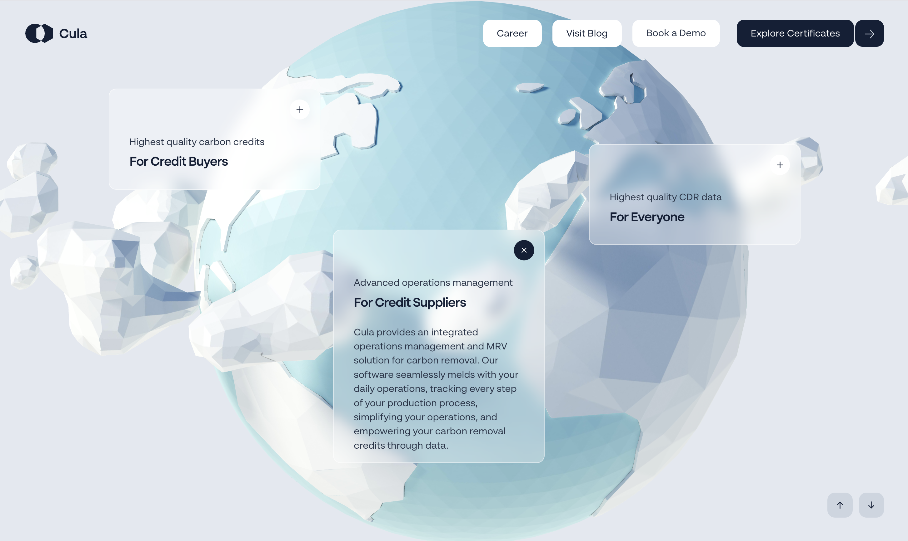
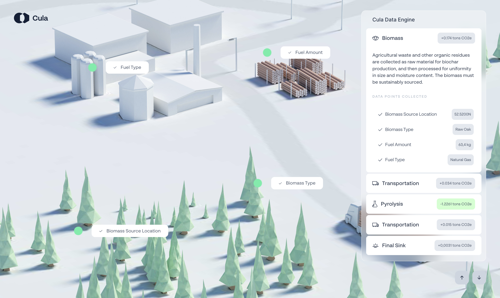

Cula
VISIT

This site features an array of translucent cards displaying information that are overlayed on top of
an expansive single image.
These cards are a good reference point for the metadata pop-up that will appear on my site for their
method of displaying information.

The colour palette is almost monochromatic besides this vibrant and eye-catching green. The
monochrome aspect helps makes the site feel clean and sleek.
The green colour will be good
for usability and guiding the user's attention.
Teletech
VISIT

This website is another that features a large single image, with information and navigation on the
perimeters. The varying proportions and scale of the various text help makes the page feel dynamic.
Also, the low-res aesthetic helps relate the site to technology, which makes sense
considering this is a site for a techno party organization.

Teletech also features a playable game within their site. This is resonant for me as it adds depth
and dynamism to the website to feature this minigame buried within it.
I aim to also include a sense of play on my website with the "make your own tag" feature.
Gufram
VISIT

This site displays the various art objects in its database in this messy, sporadic manner, called
"space" according to the button at the bottom. Hovering over an object tells its name and the client
it was for, and you can click through to read more about it.
this is a playful way to display the database of entries, especially as it is contrasted by a more
rigid grid system if you click the "grid" button.

The alternate "grid" display is a nice contrast. It allows the user to view the work as more of a
catalogue.
I would also like to contrast the collage of graffiti on the wall with a similar grid display. Each
tag would be displayed in isolation in a single cell of the grid, and user's could peruse the whole
collection free of the "wall experience".
Aten7
VISIT

Aten7 is a website that provides narrative backstory for a roleplaying game. This section of the site
features this timeline of crucial events, and users can scroll, drag, or button press to progress
the node on the timeline through various years until it reaches a new "event", which then changes
the environment setting behind it.
This will help inform my approach for the timeline feature for the primary wall of my site. How will
I connote progression or advancement inside the UI of the timeline? How have they chosen to
increment the time periods between events?